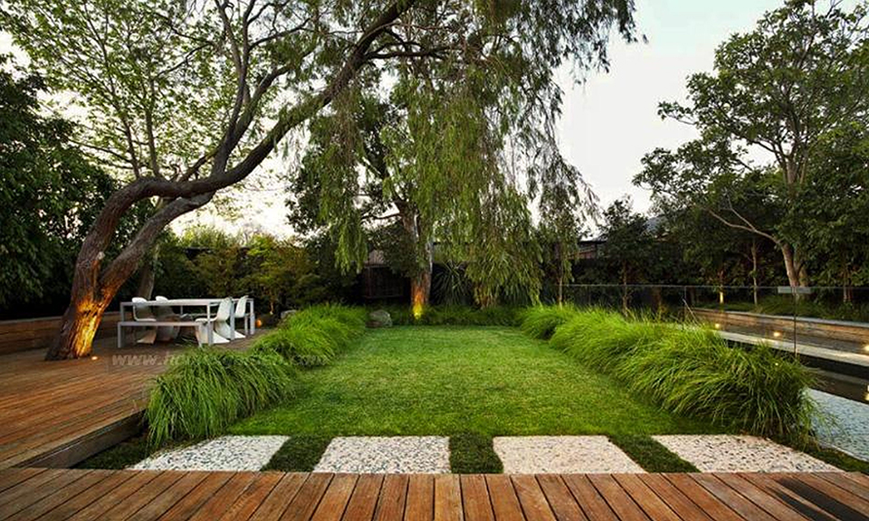
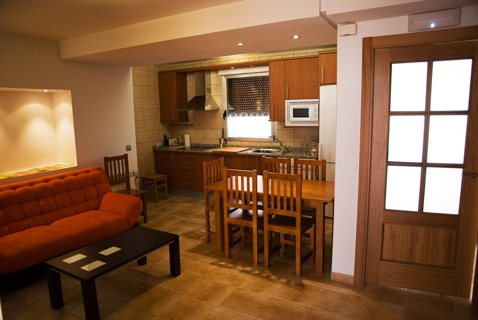

What is different about modern architecture? and modern member, Greg Jones, A.I.A., summarizes some of the common characteristics of this period of architecture.

Use of traditional materials in new ways: Materials such as wood, brick and stone are used in simplified ways reflecting a modern aesthetic. Traditional clapboard siding are replaced with simple vertical board cladding used in large, smooth planes. Brick and stonework are simple, unornamented, and used in rectilinear masses and planes.